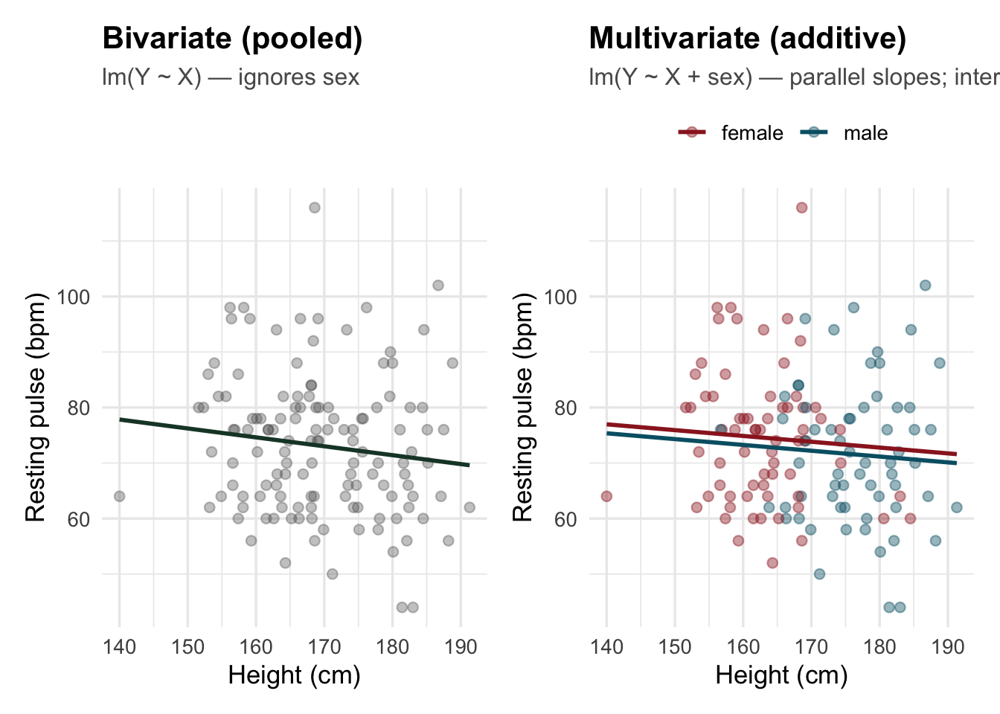
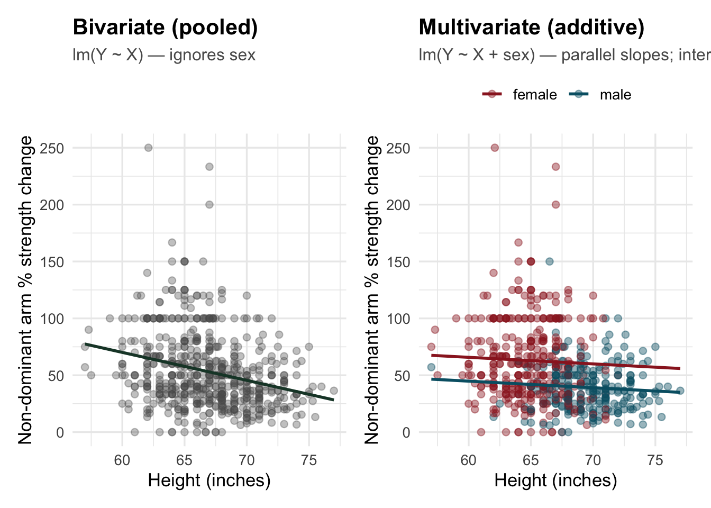
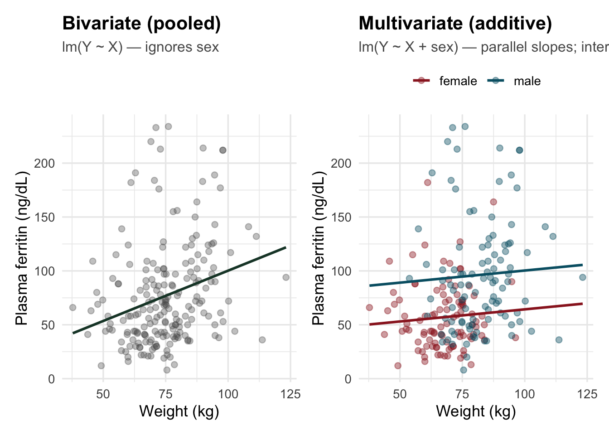
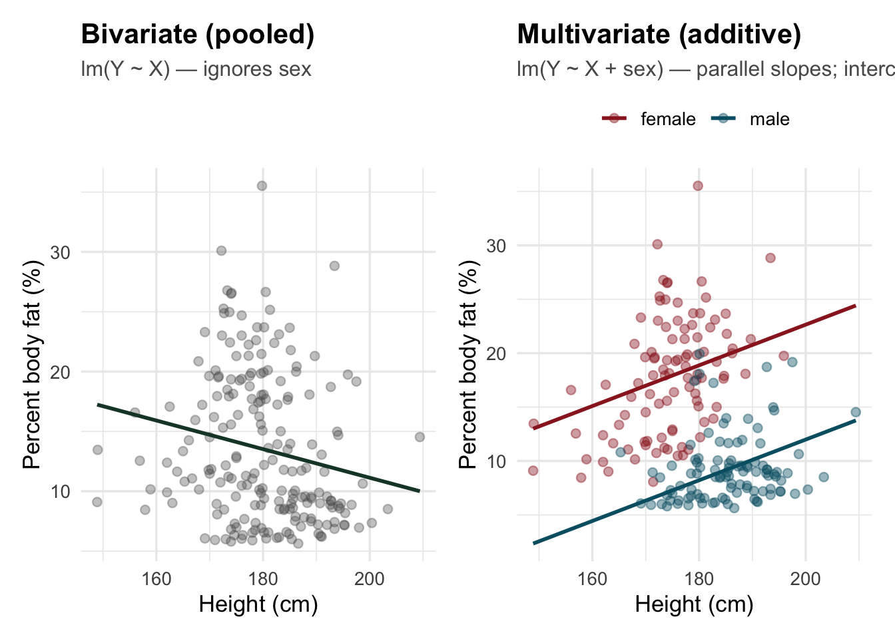
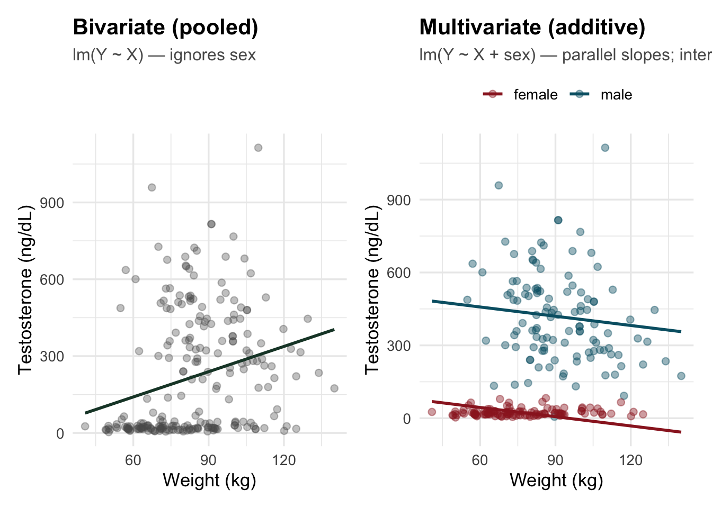
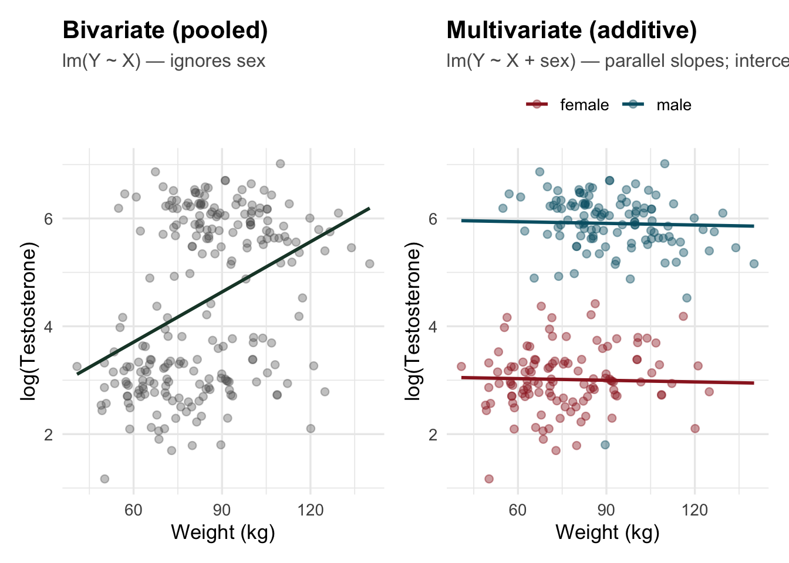
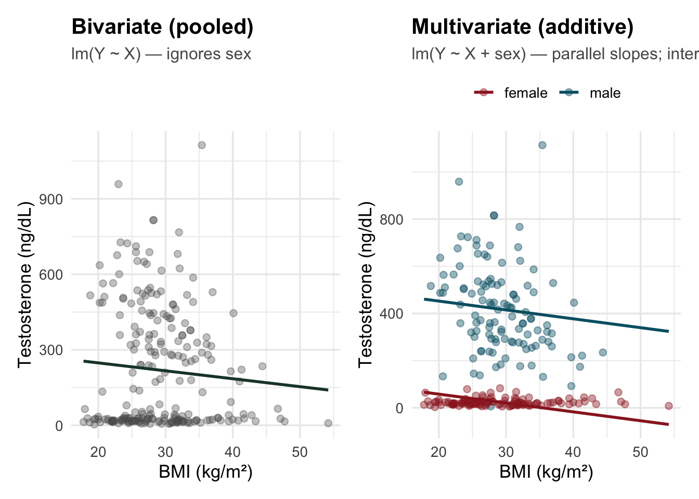
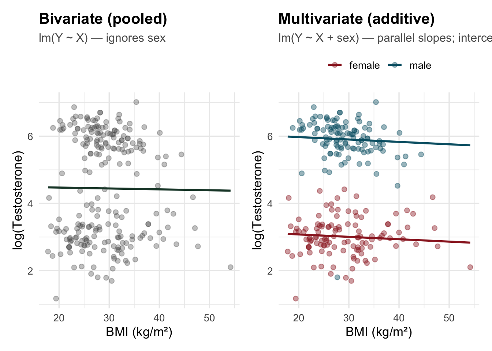

data(nhanes.samp.adult, package = "oibiostat")
nhx <- nhanes.samp.adult |>
filter(!is.na(Pulse), !is.na(Height), !is.na(Gender)) |>
transmute(
pulse = Pulse,
height_cm = Height,
sex = factor(Gender, levels = c("female", "male"))
)Confounding catalog
Pooled vs adjusted OLS: sex/gender as confounder (NHANES, FAMuSS, AIS, OpenIntro NHANES 500)
Overview
Confounding catalog: these examples all share the same geometry: sex is associated with the predictor and with the outcome, so a pooled Y ~ X slope can mislead. The figures contrast that pooled fit with lm(Y ~ X + sex) — parallel lines (one shared slope for X, sex-specific intercepts), which is what standard additive multiple regression fits when there is no interaction. What changes by dataset is whether the coefficient on X attenuates or reverses sign once sex is included.
| Example | Data source | Pooled vs adjusted (plain language) |
|---|---|---|
| Pulse ~ height | oibiostat::nhanes.samp.adult (NHANES subsample) |
Marginal negative pulse–height trend driven by sex; + sex leaves height not predictive |
| Strength gain ~ height | 19_famuss.csv (FAMuSS) |
Strong pooled slope dulls after + sex (near non-significance) |
| Ferritin ~ weight | DAAG::ais |
Strong pooled slope attenuates after + sex |
| % body fat ~ height | DAAG::ais |
Pooled slope negative; + sex gives positive height slope (flip) |
| Testosterone ~ weight | oibiostat::nhanes.samp.adult.500 (OpenIntro page) |
Sign flip: pooled positive, + sex negative (matches common lm(Testosterone ~ Weight + Gender) teaching example) |
| Testosterone ~ BMI | same nhanes.samp.adult.500 object |
Contrast: pooled slope on BMI already negative here; + sex refines it and typical inference strengthens (compare to the weight-driven flip above) |
Additive vs interaction
Parallel lines match lm(Y ~ X + sex) (no X:sex term). If you fit lm(Y ~ X * sex), slopes for X are allowed to differ by sex—then within-sex OLS can match the fitted lines, but the multivariate story is no longer “one slope for everyone holding sex constant.” This catalog sticks to the additive (parallel) case so the plots line up with the coefficient on X from standard introductory multiple regression.
Smaller NHANES extract (
n ≈ 130)
The pulse–height section uses data(nhanes.samp.adult, package = "oibiostat") (same rows as oibiostat’s adult NHANES extract; a snake_case mirror lives at datasets_staging/cleaned/23_nhanes_adult.csv if you prefer CSV). In national, survey-weighted NHANES, within-sex pulse–height slopes need not be literally zero, but the composition story (shorter mean vs higher pulse among women) is stable. Treat the plots here as methods / intuition, not publishable population inference.
1. Resting pulse vs height (attenuation toward null)
Mechanism: On average, women tend to have higher resting pulse and shorter stature than men. In a pooled sample you can see pulse decreasing with height (taller people skew male; men skew lower pulse). Within sex, that trend is typically weak — the pooled line was largely a composition artifact.
Complete cases: N = 131.
nhx |>
group_by(sex) |>
summarise(
n = n(),
mean_pulse = mean(pulse),
sd_pulse = sd(pulse),
mean_height_cm = mean(height_cm),
sd_height = sd(height_cm),
.groups = "drop"
) |>
knitr::kable(digits = 2, caption = "Pulse and height by sex (NHANES adult subsample)")| sex | n | mean_pulse | sd_pulse | mean_height_cm | sd_height |
|---|---|---|---|---|---|
| female | 68 | 74.59 | 12.30 | 162.74 | 7.42 |
| male | 63 | 71.52 | 12.78 | 176.56 | 7.17 |
mod_pulse_bi <- lm(pulse ~ height_cm, data = nhx)
mod_pulse_adj <- lm(pulse ~ height_cm + sex, data = nhx)
bind_rows(
tidy(mod_pulse_bi) |> mutate(model = "Bivariate"),
tidy(mod_pulse_adj) |> mutate(model = "+ sex")
) |>
filter(term %in% c("(Intercept)", "height_cm", "sexmale")) |>
select(model, term, estimate, std.error, statistic, p.value) |>
knitr::kable(digits = 3, caption = "Pulse ~ height (+ sex)")| model | term | estimate | std.error | statistic | p.value |
|---|---|---|---|---|---|
| Bivariate | (Intercept) | 100.293 | 18.550 | 5.407 | 0.000 |
| Bivariate | height_cm | -0.160 | 0.109 | -1.468 | 0.145 |
| + sex | (Intercept) | 91.636 | 24.692 | 3.711 | 0.000 |
| + sex | height_cm | -0.105 | 0.151 | -0.692 | 0.490 |
| + sex | sexmale | -1.617 | 3.033 | -0.533 | 0.595 |
plot_naive_vs_adjusted(
nhx, "height_cm", "pulse", "sex", mod_pulse_adj,
"Height (cm)", "Resting pulse (bpm)"
)
Diagnostics — pulse ~ height (bivariate, ignores sex)
plot(performance::check_model(mod_pulse_bi, base_size = 11, size_title = 12))performance::check_model for lm(pulse ~ height_cm).

Diagnostics — pulse ~ height + sex
plot(performance::check_model(mod_pulse_adj, base_size = 11, size_title = 12))performance::check_model for lm(pulse ~ height_cm + sex).

2. Strength-training response vs height — FAMuSS (attenuation)
fam <- read_csv("datasets_staging/cleaned/19_famuss.csv", show_col_types = FALSE) |>
filter(!is.na(ndrm_change_pct), !is.na(height_in), !is.na(sex)) |>
mutate(sex = factor(sex, levels = c("female", "male")))
mod_fam_bi <- lm(ndrm_change_pct ~ height_in, data = fam)
mod_fam_adj <- lm(ndrm_change_pct ~ height_in + sex, data = fam)FAMuSS — N = 595.
bind_rows(
tidy(mod_fam_bi) |> mutate(model = "Bivariate"),
tidy(mod_fam_adj) |> mutate(model = "+ sex")
) |>
filter(term %in% c("(Intercept)", "height_in", "sexmale")) |>
select(model, term, estimate, std.error, statistic, p.value) |>
knitr::kable(digits = 3, caption = "Non-dominant arm % strength change ~ height (+ sex)")| model | term | estimate | std.error | statistic | p.value |
|---|---|---|---|---|---|
| Bivariate | (Intercept) | 217.546 | 24.577 | 8.852 | 0.000 |
| Bivariate | height_in | -2.458 | 0.367 | -6.693 | 0.000 |
| + sex | (Intercept) | 100.458 | 30.552 | 3.288 | 0.001 |
| + sex | height_in | -0.578 | 0.470 | -1.230 | 0.219 |
| + sex | sexmale | -20.952 | 3.416 | -6.133 | 0.000 |
plot_naive_vs_adjusted(
fam, "height_in", "ndrm_change_pct", "sex", mod_fam_adj,
"Height (inches)", "Non-dominant arm % strength change"
)
Diagnostics — % strength change ~ height (bivariate)
plot(performance::check_model(mod_fam_bi, base_size = 11, size_title = 12))performance::check_model for lm(ndrm_change_pct ~ height_in) (FAMuSS).

Diagnostics — % strength change ~ height + sex
plot(performance::check_model(mod_fam_adj, base_size = 11, size_title = 12))performance::check_model for lm(ndrm_change_pct ~ height_in + sex).

3. Plasma ferritin vs body weight — AIS (attenuation)
data(ais, package = "DAAG")
ais_fer <- ais |>
filter(!is.na(ferr), !is.na(wt), !is.na(sex)) |>
mutate(sex = factor(sex, levels = c("f", "m"), labels = c("female", "male")))
mod_fer_bi <- lm(ferr ~ wt, data = ais_fer)
mod_fer_adj <- lm(ferr ~ wt + sex, data = ais_fer)AIS athletes — ferritin / weight; N = 202.
bind_rows(
tidy(mod_fer_bi) |> mutate(model = "Bivariate"),
tidy(mod_fer_adj) |> mutate(model = "+ sex")
) |>
filter(term %in% c("(Intercept)", "wt", "sexmale")) |>
select(model, term, estimate, std.error, statistic, p.value) |>
knitr::kable(digits = 3, caption = "Ferritin ~ weight (+ sex), AIS")| model | term | estimate | std.error | statistic | p.value |
|---|---|---|---|---|---|
| Bivariate | (Intercept) | 6.845 | 17.697 | 0.387 | 0.699 |
| Bivariate | wt | 0.934 | 0.232 | 4.024 | 0.000 |
| + sex | (Intercept) | 41.801 | 18.171 | 2.300 | 0.022 |
| + sex | wt | 0.225 | 0.262 | 0.859 | 0.391 |
| + sex | sexmale | 36.024 | 7.281 | 4.948 | 0.000 |
plot_naive_vs_adjusted(
ais_fer, "wt", "ferr", "sex", mod_fer_adj,
"Weight (kg)", "Plasma ferritin (ng/dL)"
)
Diagnostics — ferritin ~ weight (bivariate)
plot(performance::check_model(mod_fer_bi, base_size = 11, size_title = 12))performance::check_model for lm(ferr ~ wt) (AIS).

Diagnostics — ferritin ~ weight + sex
plot(performance::check_model(mod_fer_adj, base_size = 11, size_title = 12))performance::check_model for lm(ferr ~ wt + sex).

4. Percent body fat vs height — AIS (sign reversal)
ais_bf <- ais |>
filter(!is.na(pcBfat), !is.na(ht), !is.na(sex)) |>
mutate(sex = factor(sex, levels = c("f", "m"), labels = c("female", "male")))
mod_bf_bi <- lm(pcBfat ~ ht, data = ais_bf)
mod_bf_adj <- lm(pcBfat ~ ht + sex, data = ais_bf)N = 202 (same DAAG::ais cohort).
bind_rows(
tidy(mod_bf_bi) |> mutate(model = "Bivariate"),
tidy(mod_bf_adj) |> mutate(model = "+ sex")
) |>
filter(term %in% c("(Intercept)", "ht", "sexmale")) |>
select(model, term, estimate, std.error, statistic, p.value) |>
knitr::kable(digits = 4, caption = "% body fat ~ height (+ sex), AIS — note sign on `ht`")| model | term | estimate | std.error | statistic | p.value |
|---|---|---|---|---|---|
| Bivariate | (Intercept) | 35.0400 | 7.9650 | 4.3992 | 0.0000 |
| Bivariate | ht | -0.1196 | 0.0442 | -2.7073 | 0.0074 |
| + sex | (Intercept) | -15.1077 | 6.4304 | -2.3494 | 0.0198 |
| + sex | ht | 0.1888 | 0.0368 | 5.1361 | 0.0000 |
| + sex | sexmale | -10.6580 | 0.7138 | -14.9315 | 0.0000 |
plot_naive_vs_adjusted(
ais_bf, "ht", "pcBfat", "sex", mod_bf_adj,
"Height (cm)", "Percent body fat (%)"
)
Diagnostics — % body fat ~ height (bivariate)
plot(performance::check_model(mod_bf_bi, base_size = 11, size_title = 12))performance::check_model for lm(pcBfat ~ ht) (AIS).

Diagnostics — % body fat ~ height + sex
plot(performance::check_model(mod_bf_adj, base_size = 11, size_title = 12))performance::check_model for lm(pcBfat ~ ht + sex).

5. Testosterone vs body weight — OpenIntro nhanes.samp.adult.500
The OpenIntro nhanes.samp.adult.500 dataset is a sample of 500 adults from NHANES (same variable structure as nhanes.samp). Lab Testosterone is missing for many rows; the analysis uses everyone with non-missing Testosterone, Weight, and Gender (typically N ≈ 230—much more than the 200-row nhanes.samp extract).
Teaching code often runs:
lm(Testosterone ~ Weight + Gender, data = d)Here we use sex = factor(Gender, levels = c("female", "male")) and lm(Testosterone ~ Weight + sex) — the same additive model (female baseline), which matches Gender in R when levels are ordered female then male. Parallel-line plots use that fitted model.
Textbook pattern (this extract)
| Model | Slope on weight | p (typical) |
|---|---|---|
lm(Testosterone ~ Weight, …) |
positive | ≈ 5.7 × 10⁻⁵ |
lm(Testosterone ~ Weight + Gender, …) |
negative | ≈ 0.013 |
The oibiostat build of nhanes.samp.adult.500 reproduces these orders of magnitude when you filter to complete Testosterone / Weight / Gender.
data(nhanes.samp.adult.500, package = "oibiostat")
nh_500 <- nhanes.samp.adult.500 |>
filter(!is.na(Testosterone), !is.na(Weight), !is.na(Gender)) |>
mutate(
sex = factor(Gender, levels = c("female", "male")),
log_testosterone = log(Testosterone)
)
nh_500_bmi <- nhanes.samp.adult.500 |>
filter(!is.na(Testosterone), !is.na(BMI), !is.na(Gender)) |>
mutate(
sex = factor(Gender, levels = c("female", "male")),
log_testosterone = log(Testosterone)
)Complete cases: N = 230 (116 female, 114 male).
mod_T_bi <- lm(Testosterone ~ Weight, data = nh_500)
mod_T_adj <- lm(Testosterone ~ Weight + sex, data = nh_500)
mod_log_bi <- lm(log_testosterone ~ Weight, data = nh_500)
mod_log_adj <- lm(log_testosterone ~ Weight + sex, data = nh_500)
t_T_weight <- bind_rows(
tidy(mod_T_bi) |> mutate(model = "Bivariate (raw T)"),
tidy(mod_T_adj) |> mutate(model = "+ sex (raw T)")
) |>
filter(term %in% c("(Intercept)", "Weight", "sexmale")) |>
select(model, term, estimate, std.error, statistic, p.value)
t_log_weight <- bind_rows(
tidy(mod_log_bi) |> mutate(model = "Bivariate (log T)"),
tidy(mod_log_adj) |> mutate(model = "+ sex (log T)")
) |>
filter(term %in% c("(Intercept)", "Weight", "sexmale")) |>
select(model, term, estimate, std.error, statistic, p.value)
knitr::kable(
t_T_weight,
digits = 4,
caption = "Testosterone (ng/dL) ~ Weight (kg): focus on row `Weight`"
)| model | term | estimate | std.error | statistic | p.value |
|---|---|---|---|---|---|
| Bivariate (raw T) | (Intercept) | -56.6823 | 68.9395 | -0.8222 | 0.4118 |
| Bivariate (raw T) | Weight | 3.2871 | 0.8017 | 4.1003 | 0.0001 |
| + sex (raw T) | (Intercept) | 120.4580 | 40.2410 | 2.9934 | 0.0031 |
| + sex (raw T) | Weight | -1.2679 | 0.5040 | -2.5157 | 0.0126 |
| + sex (raw T) | sexmale | 413.5676 | 19.0585 | 21.6999 | 0.0000 |
knitr::kable(
t_log_weight,
digits = 5,
caption = "Same participants on log scale (parallel-lines geometry still matches `lm(log(T) ~ Weight + sex)`)"
)| model | term | estimate | std.error | statistic | p.value |
|---|---|---|---|---|---|
| Bivariate (log T) | (Intercept) | 1.84399 | 0.43590 | 4.23026 | 0.00003 |
| Bivariate (log T) | Weight | 0.03103 | 0.00507 | 6.12226 | 0.00000 |
| + sex (log T) | (Intercept) | 3.09051 | 0.18084 | 17.08948 | 0.00000 |
| + sex (log T) | Weight | -0.00102 | 0.00227 | -0.45025 | 0.65296 |
| + sex (log T) | sexmale | 2.91023 | 0.08565 | 33.97861 | 0.00000 |
Coefficients above correspond to the two figures below (same pooled vs parallel layout for raw and log outcome).
plot_naive_vs_adjusted(
nh_500, "Weight", "Testosterone", "sex", mod_T_adj,
"Weight (kg)", "Testosterone (ng/dL)"
)
plot_naive_vs_adjusted(
nh_500, "Weight", "log_testosterone", "sex", mod_log_adj,
"Weight (kg)", "log(Testosterone)"
)
Diagnostics — raw testosterone ~ weight (bivariate)
plot(performance::check_model(mod_T_bi, base_size = 11, size_title = 12))performance::check_model for lm(Testosterone ~ Weight) (ng/dL).

Diagnostics — raw testosterone ~ weight + sex
plot(performance::check_model(mod_T_adj, base_size = 11, size_title = 12))performance::check_model for lm(Testosterone ~ Weight + sex).

Diagnostics — log(testosterone) ~ weight (bivariate)
plot(performance::check_model(mod_log_bi, base_size = 11, size_title = 12))performance::check_model for lm(log_testosterone ~ Weight).

Diagnostics — log(testosterone) ~ weight + sex
plot(performance::check_model(mod_log_adj, base_size = 11, size_title = 12))performance::check_model for lm(log_testosterone ~ Weight + sex).

6. Testosterone vs BMI — same OpenIntro adults
The same nhanes.samp.adult.500 object includes BMI (kg/m²). Restricting to complete Testosterone, BMI, and Gender reproduces the same N as the weight-based filters in this file (230 here), but the geometry of the pooled line can differ: adiposity adjusted for height is not the same predictor as weight alone.
Complete cases (BMI analysis): N = 230 (nh_500 / nh_500_bmi are both prepared in the nh-testosterone-load chunk above).
mod_T_bmi_bi <- lm(Testosterone ~ BMI, data = nh_500_bmi)
mod_T_bmi_adj <- lm(Testosterone ~ BMI + sex, data = nh_500_bmi)
mod_log_bmi_bi <- lm(log_testosterone ~ BMI, data = nh_500_bmi)
mod_log_bmi_adj <- lm(log_testosterone ~ BMI + sex, data = nh_500_bmi)
t_T_bmi <- bind_rows(
tidy(mod_T_bmi_bi) |> mutate(model = "Bivariate (raw T)"),
tidy(mod_T_bmi_adj) |> mutate(model = "+ sex (raw T)")
) |>
filter(term %in% c("(Intercept)", "BMI", "sexmale")) |>
select(model, term, estimate, std.error, statistic, p.value)
t_log_bmi <- bind_rows(
tidy(mod_log_bmi_bi) |> mutate(model = "Bivariate (log T)"),
tidy(mod_log_bmi_adj) |> mutate(model = "+ sex (log T)")
) |>
filter(term %in% c("(Intercept)", "BMI", "sexmale")) |>
select(model, term, estimate, std.error, statistic, p.value)
knitr::kable(
t_T_bmi,
digits = 4,
caption = "Testosterone (ng/dL) ~ BMI (kg/m²): focus on row `BMI`"
)| model | term | estimate | std.error | statistic | p.value |
|---|---|---|---|---|---|
| Bivariate (raw T) | (Intercept) | 310.9984 | 76.5000 | 4.0653 | 0.0001 |
| Bivariate (raw T) | BMI | -3.1504 | 2.5664 | -1.2276 | 0.2209 |
| + sex (raw T) | (Intercept) | 133.2073 | 42.9878 | 3.0987 | 0.0022 |
| + sex (raw T) | BMI | -3.7579 | 1.4185 | -2.6493 | 0.0086 |
| + sex (raw T) | sexmale | 394.4607 | 17.3044 | 22.7954 | 0.0000 |
knitr::kable(
t_log_bmi,
digits = 5,
caption = "Same participants on log scale: `lm(log(T) ~ BMI + sex)`"
)| model | term | estimate | std.error | statistic | p.value |
|---|---|---|---|---|---|
| Bivariate (log T) | (Intercept) | 4.52528 | 0.50535 | 8.95475 | 0.00000 |
| Bivariate (log T) | BMI | -0.00267 | 0.01695 | -0.15741 | 0.87506 |
| + sex (log T) | (Intercept) | 3.22009 | 0.19303 | 16.68207 | 0.00000 |
| + sex (log T) | BMI | -0.00713 | 0.00637 | -1.11915 | 0.26426 |
| + sex (log T) | sexmale | 2.89580 | 0.07770 | 37.26825 | 0.00000 |
plot_naive_vs_adjusted(
nh_500_bmi, "BMI", "Testosterone", "sex", mod_T_bmi_adj,
"BMI (kg/m²)", "Testosterone (ng/dL)"
)lm(Testosterone ~ BMI) vs parallel lm(Testosterone ~ BMI + sex).

plot_naive_vs_adjusted(
nh_500_bmi, "BMI", "log_testosterone", "sex", mod_log_bmi_adj,
"BMI (kg/m²)", "log(Testosterone)"
)lm(log(Testosterone) ~ BMI) vs parallel lm(log(Testosterone) ~ BMI + sex).

Diagnostics — raw testosterone ~ BMI (bivariate)
plot(performance::check_model(mod_T_bmi_bi, base_size = 11, size_title = 12))performance::check_model for lm(Testosterone ~ BMI) (ng/dL).

Diagnostics — raw testosterone ~ BMI + sex
plot(performance::check_model(mod_T_bmi_adj, base_size = 11, size_title = 12))performance::check_model for lm(Testosterone ~ BMI + sex).

Diagnostics — log(testosterone) ~ BMI (bivariate)
plot(performance::check_model(mod_log_bmi_bi, base_size = 11, size_title = 12))performance::check_model for lm(log_testosterone ~ BMI).

Diagnostics — log(testosterone) ~ BMI + sex
plot(performance::check_model(mod_log_bmi_adj, base_size = 11, size_title = 12))performance::check_model for lm(log_testosterone ~ BMI + sex).

Take-home
- Pulse ~ height on the NHANES subsample illustrates attenuation: the marginal effect of height is a mixture of physiology and sex composition; conditioning on sex strips most of it.
- FAMuSS and ferritin ~ weight show strong bivariate slopes that shrink when sex is added — good for “don’t trust the pooled line” without requiring a full sign flip.
pcBfat ~ heightin AIS is the visual sign reversal when you compare pooledlm(Y ~ X)to parallellm(Y ~ X + sex)fits.- Testosterone ~ weight using
nhanes.samp.adult.500(lm(Testosterone ~ Weight + Gender)): strong sign flip on weight with many complete lab rows; compare raw vs log figures and tables. - Testosterone ~ BMI on the same complete cases illustrates how swapping the adiposity predictor changes the pooled story (Section 6); compare coefficients and plots to weight.